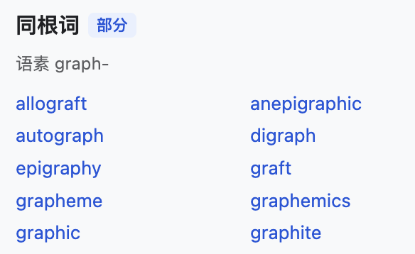
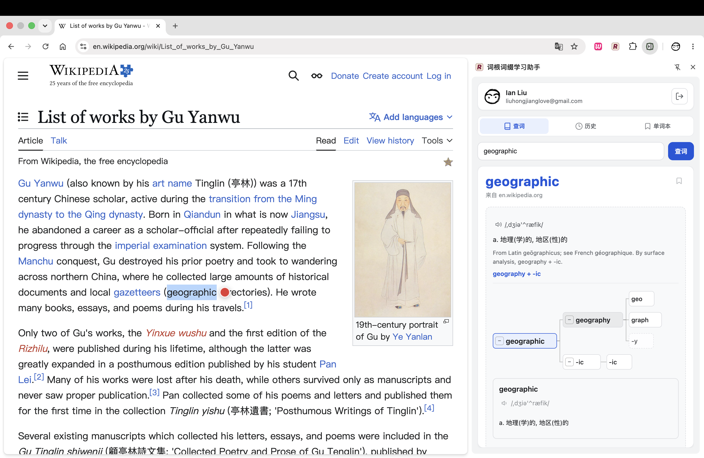
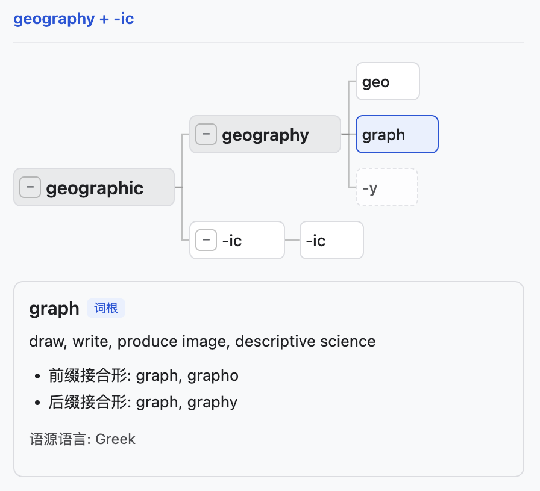
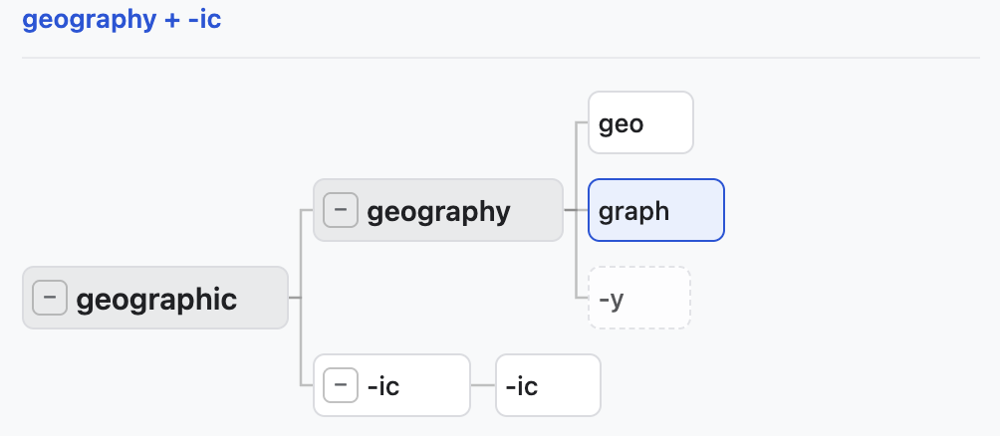
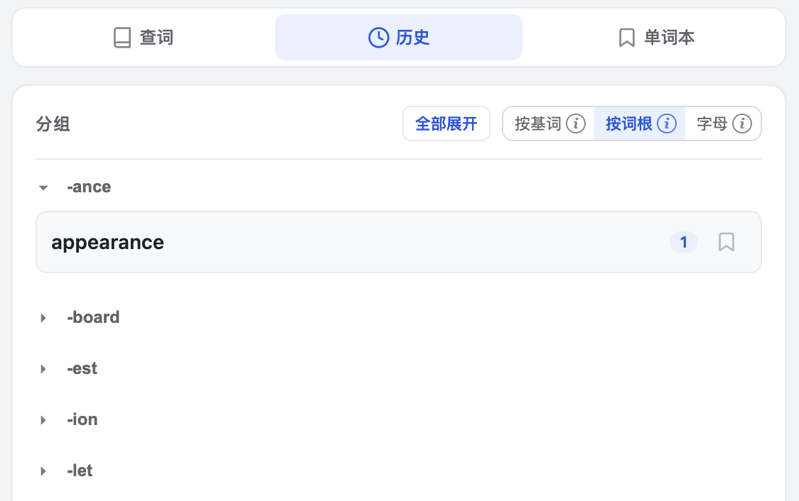
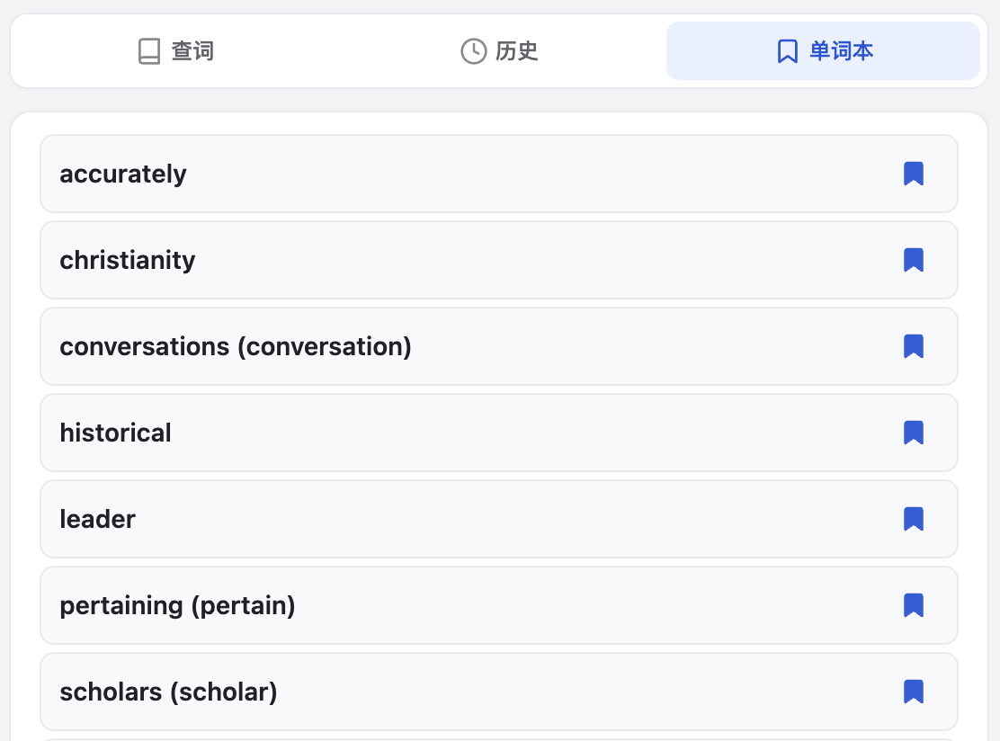
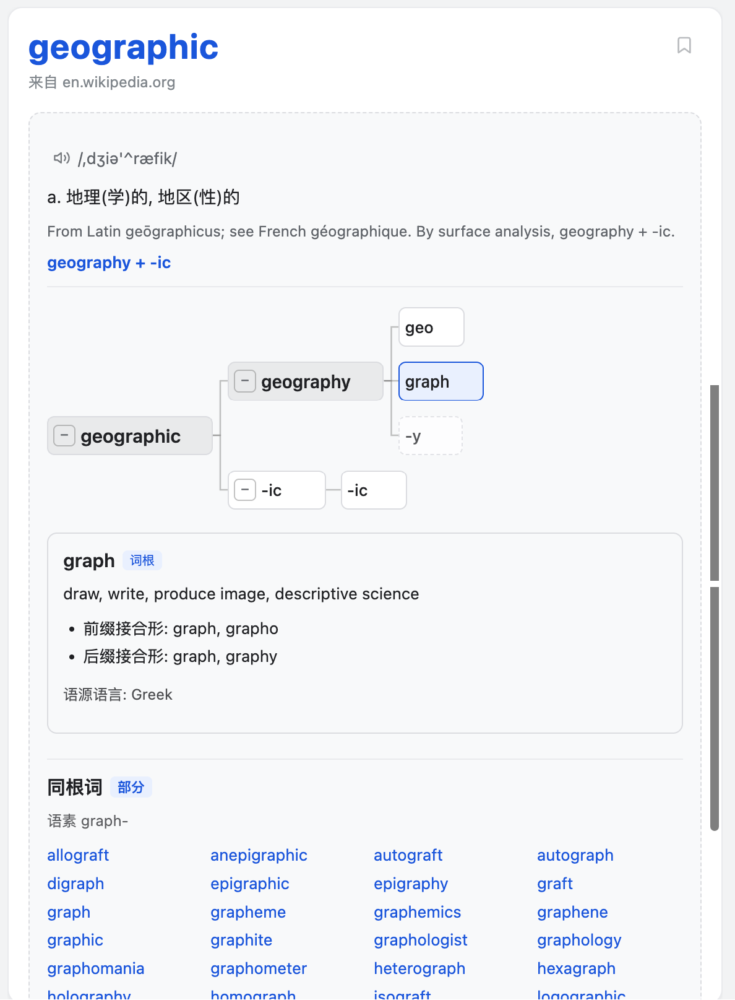

备考阅读，一词串一串
四六级、考研、雅思、托福、GRE——在读真题、外刊、论文时，用同根词把词汇连成网络，而不是孤立背列表。
划词见根，学词有脉
浏览任何英文网页，选中单词即可在浏览器侧边栏查释义、看词根词缀如何组成单词，并通过词源树理解词汇来历。
Chrome 网上应用店已上线 · Edge 加载项即将上线

为什么需要
传统划词工具大多只给中文翻译——查完关闭，单词还是陌生的。
背单词 App 和日常阅读是两套系统：阅读里遇到的生词，很难和词表里的条目连起来。
词根词缀「背了不会用」，是因为缺少在阅读场景里「看到结构」的机会。
解决方案
词根词缀学习助手是一款 Chrome 划词扩展。你在英文网页上选中单词，侧栏立刻展示释义、音标、词源说明，以及前缀、词根、后缀的分层拆词。词源树把词汇的派生与语素关系可视化——点击节点，继续探索同根词。在真实阅读流里记单词，而不是孤立地背拼写。

适用场景

四六级、考研、雅思、托福、GRE——在读真题、外刊、论文时，用同根词把词汇连成网络，而不是孤立背列表。
…The deploymentR pipeline runs nightly across all regions…
读 NYT、BBC、技术文档、邮件时，侧栏划词即查，无需切换词典 App，保持阅读心流。

不满足于中文翻译，通过词源树和词源说明，理解 geographic、international 这类词为何这样构成。
核心功能
在网页上选中英文单词，点击选区旁红点，侧栏打开查词结果。
…Researchers analyzed the geographicR patterns in historical migration records before publishing their findings…
前缀、词根、后缀分卡片展示，含义与接合关系清晰可读。
draw · write · produce image · descriptive science
Greek · γράφειν (gráphein)
树形可视化派生与语素结构；点击节点深入探索。
展示与当前词语素或词根相关的词汇，便于串记。
语素 graph- · 同根词
自动保存查词记录；可按词基、词根或字母分组浏览复习。

重点词一键收藏，方便反复查看。

词典未收录的语素可请求 AI 补充说明；内容标注「AI 生成」。
侧栏主题随网页明暗自动切换，夜间阅读更舒适。
差异化
快速上手
从 Chrome 网上应用店安装扩展（Edge 加载项即将上线），使用 Google 账号或邮箱验证码登录。
打开任意英文网页，选中单词，点击选区旁的红点。
在侧栏查看拆词与词源树；点击工具栏图标浏览历史，或将重点词加入单词本。
查词与 AI 释义需联网，由云端 API 提供；登录后可同步历史与单词本。
示例
geo（地）+ graph（写/图）+ -y → geography（地理）+ -ic → geographic（地理的）。在侧栏打开 geographic，你可以同时看到拆词、词源树，以及 graph- 同根词列表——一个词触发一整片词汇网络。

阅读心流
选中、点击、侧栏展开——三步在原文旁完成查词与探索。无需复制单词、无需打开新标签、无需离开当前文章。先读英文，再在同一视线内看结构与词源，适合长时间沉浸式阅读。
演示
FAQ